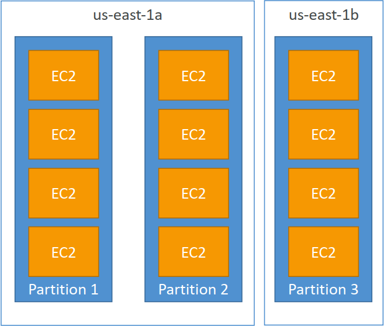

IPv4 allows for 3.7 billion different addresses in the public space
1. Elastic IPs - have a fixed public IP for your instance
- With an Elastic IP address, you can mask the failure of an instance or software by rapidly remapping the address to another instance in your account.
- You can only have 5 Elastic IP in your account (you can ask AWS to increase that).
- Overall, try to avoid using Elastic IP:
- They often reflect poor architectural decisions
- Instead, use a random public IP and register a DNS name to it
- Or, as we'll see later, use a Load Balancer and don't use a public IP
2. Placement Groups
Cluster - clusters instances into a low-latency group in a single Availability Zone

- Pros: Great network (10 Gbps bandwidth between instances with Enhanced Networking enabled - recommended)
- Cons: If the rack fails, all instances fails at the same time
- Use case:
- Big Data job that needs to complete fast
- Application that needs extremely low latency and high network throughput
Spread - spreads instances across underlying hardware (max 7 instances per group per AZ)
- Pros:
- Can span across Availability Zones (AZ)
- Reduced risk is simultaneous failure
- EC2 Instances are on different physical hardware
- Cons: Limited to 7 instances per AZ per placement group
- Use case:
- Application that needs to maximize high availability
- Critical Applications where each instance must be isolated from failure from each other

- Pros:
Partition - spreads instances across many different partitions (which rely on different sets of racks) within an AZ. Scales to 100s of EC2 instances per group (Hadoop, Cassandra, Kafka)
- Up to 7 partitions per AZ
- Can span across multiple AZs in the same region
- Up to 100s of EC2 instances
- The instances in a partition do not share racks with the instances in the other partitions
- A partition failure can affect many EC2 but won’t affect other partitions
- EC2 instances get access to the partition information as metadata
- Use cases: HDFS, HBase, Cassandra, Kafka

3. Elastic Network Interfaces (ENI)
- Logical component in a VPC that represents a virtual network card
- The ENI can have the following attributes:
- Primary private IPv4, one or more secondary IPv4
- One Elastic IP (IPv4) per private IPv4
- One Public IPv4
- One or more security groups
- A MAC address
- You can create ENI independently and attach them on the fly (move them) on EC2 instances for failover
- Bound to a specific availability zone (AZ)
4. EC2 Hibernate
Under the hood: the RAM state is written to a file in the root EBS volume which must be encrypted Use cases:
- long-running processing
- saving the RAM state
- services that take time to initialize
5. EC2 Hibernate – Good to know
- Supported instance families - C3, C4, C5, M3, M4, M5, R3, R4, and R5
- Instance RAM size - must be less than 150 GB
- Instance size - not supported for bare metal instances
- AMI: Amazon Linux 2, Linux AMI, Ubuntu & Windows…
- Root Volume: must be EBS, encrypted, not instance store, and large
- Available for On-Demand and Reserved Instances
- An instance cannot be hibernated more than 60 days
6. EC2 Nitro
Underlying Platform for the next generation of EC2 instances, Higher Speed EBS (Nitro is necessary for 64,000 EBS IOPS – max 32,000 on non-Nitro)
7. EC2 – Capacity Reservations
- Capacity Reservations ensure you have EC2 Capacity when needed
- Manual or planned end-date for the reservation
- No need for 1 or 3-year commitment
- Capacity access is immediate, you get billed as soon as it starts
- Specify:
- The Availability Zone in which to reserve the capacity (only one)
- The number of instances for which to reserve capacity
- The instance attributes, including the instance type, tenancy, and platform/OS
- Combine with Reserved Instances and Savings Plans to do cost saving